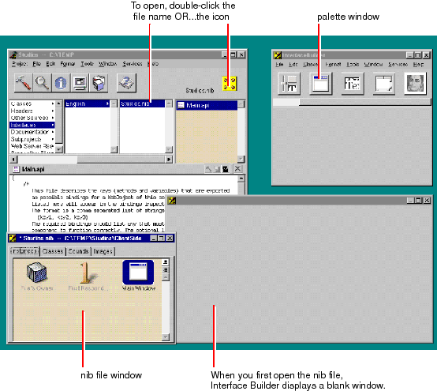

In the project browser navigate to SubprojectsClientSideJava
By default, a blank window appears when Interface Builder is launched. This is the window you'll use to create your user interface.
The Interface Builder application is located in the WebObjects program group. The icon for the application is this: